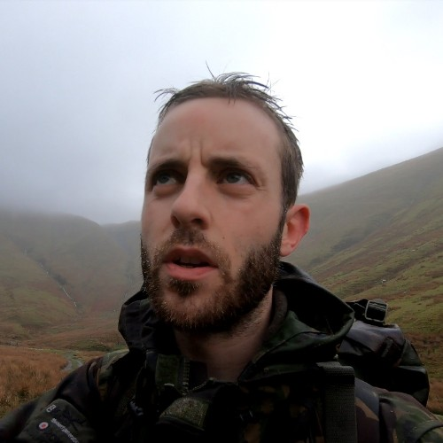
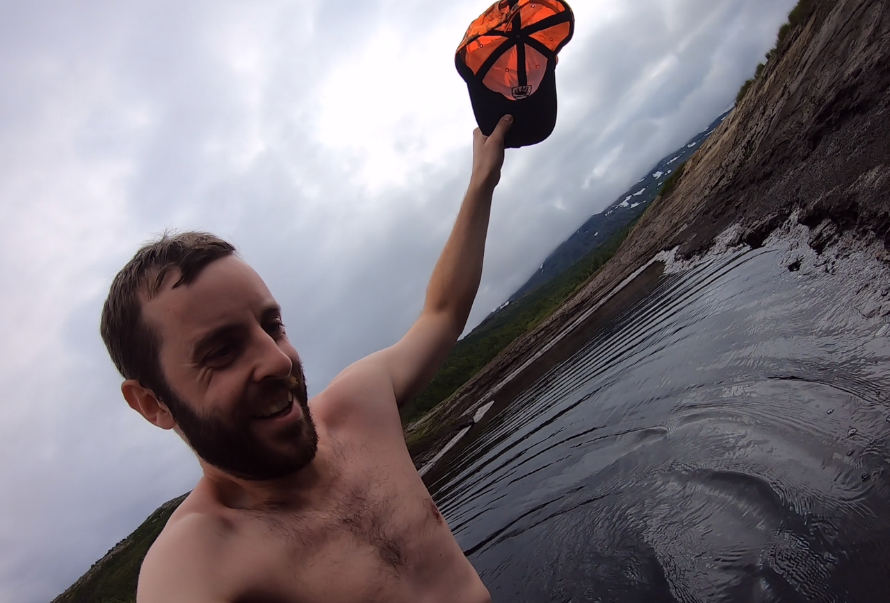

Straight Line Missions

Description
A riveting challenge where Geowizard attempts to cross a (relatively
small) country in a completely straight line. He measures his success
with his completely made up and pointless grading system.
Ingredients
- An incredibly detailed line which includes mountains, rivers
and lots of potentially angry farmers.
- Distinct lack of vital equipment such as gloves and a satellite
phone.
- An incredibly loyal girlfriend (soon to be wife) that will drive
around the middle of nowhere to keep you stocked up with supplies.
Steps
- Set off optimistically, rambling away to any poor elderly couple
you pass about your straight line mission while they try to have
a nice, quiet countryside walk.
- Update your viewers of your constant fear of the local farmers,
as they could kick you off their land bringing an end
to the mission.
- Proclaim that you have reached a low point of the mission, as
your body and mind become tired due to exhaustion.
- Make a overly risky maneuvre that could result in death, as perfectly
demonstrated by Geowizard below, where he tries to wade through
a Norweigan peat bog.
- Either give up or finally reach your destination, which is a rather
underwhelming inland estuary and not an extensive beach as one would
imagine a coast to be.
- Make a 30+ minute video explaining how close you followed the line
and give it a ranking on the completely made up and pointless
ranking system.

Back to Homepage